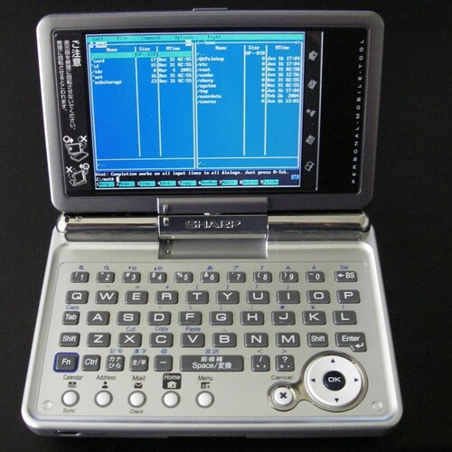

Back To The Future: Reinventing A Smart Smartphone

Back To The Future: Reinventing A Smart Smartphone
Today's smart phones,
contain disconnected walled gardens and distant islands of functionality.
The design principle revolves around that old apocryphal story,
where Willie Sutton upon being asked why he robbed banks, responded:
"because that's where the money is."
This is not a design principle,
this has nothing to do with invention.
The leading operating system and phone manufacturers,
have been beat by the little Pine Phone without much of any effort.
And of course, the Pine Phone Operating System,
being closer to the pure Linux... is far more powerful.
It is not just Pine Phone, but also Raspberry PI,
with a 4G modem, UPS/Battery and touchscreen, and a custom case.
Here we have to think in four dimensions, it will be larger,
but with room for extra hardware and the power of a proper desktop.
The Raspberry PI or any Single Board Computer (SBC), is the modular phone,
that people don't yet realize they want.
This is not a question of hardware,
hardware is a tough business, as Samsung's exploding phones teach us[1].
To this day Pine Phone, warns that dead pixels on the screen are normal,
and not purchase their phones, if that will cause a return.
Dealing with hardware problems,
is expensive, and doubly so for companies that do not yet have large financial backing.
The Raspberry PI and the other SBCs are an exception here,
because you are buying everything a piece at a time.
But this _is_ a question of software,
the underlying operating systems must be easy to access.
The phone has to boot the same way that a computer does,
by trapping the users within some abstraction layer the companies destroy the computer.
What this means, is that the company that will bring the computer back,
as in not bother with an alternative GUI, will easily overpower the leading giants.
An unrestricted Linux device like the Pine Phone, or Librem 5,
has a lot more to offer than privacy violations, photo leaks and candy crush.
They offer real functionality,
with a world of developers that feel comfortable programming for Linux or BSD.
Once the restriction of the Simplified Graphical Shell (like Android or MacOS) is removed,
the underlying operating system will be exposed to real developers.
One of the first things people will program are clones of the leading Simplified Graphical Shells,
the simplicity will always be there, but not at restart... it will require the poke of an icon on a real mobile desktop.
Android is just an app on the Linux underneath,
I am sure that programmers integrated it far more since, and it is now part of the customized Linux underneath, but it is just a program.
A program that is pushing away real programmers from programming their own way,
and creating a market for phones that don't do that.
That principle of "of I rob banks, because that's where the money is.",
creates a great weakness for leading smartphone manufacturers.
While they tend to the flowers of their walled gardens,
phones like Librem 5, and the Pine Phone are letting everyone know that the smartphone market isn't dominated.
There is just a couple of companies in a little corner,
yelling loudly at the sky, while shooting themselves in the foot.
We can't really tell what the real phone will look like,
it needs an evolution, not a shortsighted revolution as we have seen thus far.
I am a Zaurus user, I was already uncomfortable with GUI shell quirks back in mid 2000's,
when the SL-5500[2] came out.
But, there were no real restrictions,
and I had fun programming it.
Just because not everyone is into programming,
doesn't mean that unrestricted access to the OS won't benefit them.
There will be a lot more programs,
and a lot more better ideas.
We can see some bubbles of potential functionality forming today,
the conversational user interface, like Siri is an OK-ish idea.
A more chat-room like experience with multiple bots,
would be even better.
And there is a friendly programming language emerging already as demonstrated by IFTTT and Zapier[3],
though it is far from perfect, it is still somewhat of an improvement over Automator[4].
These work flows are just pipes, or even less than that,
simple commands as described by Brian Kernighan in the 1982's The UNIX System[5].
It is a lot of user interface to just spell out some commands,
but done correctly, it can work.
The correct implementation of a GUI based work-flow program,
is one that just helps with creating Linux Command Lines, or shell scripts.
And it works both ways,
it can convert shell scripts and one liners to GUI and back.
There is nothing special about this,
this has been all thought up by decades ago, except every implementation failed because it had no vision beyond wall gardens and cheap money grabs.
It is important to have a round trip from command line to GUI,
and from GUI to command line, because that is how people learn programming.
We witnessed something similar in the view source feature, and not developer console of a browser,
just being able to match the visuals to the code helps a person learn how to use the code.
The incentive for using code is great,
as using the GUI is many times slower.
The difference is like dragging words from a dictionary,
vs actually typing them, it takes 10 seconds to find the word in a dictionary and one second to type it out.
Like wise, it takes 10 seconds to find an action in a library of actions,
and just one second to write it's name on the command line.
Then there are your dot files, and user profiles,
you want to have one account on your phone for business and another for home.
When logged in to both,
you can easily switch between the two.
Your business account,
will be connected to your business email.
Where your home account will be connected to the family email account,
this means that different login credentials will exist in your profiles.
Your business account may use a lot more third party services,
and they have to be kept separate from home related things.
The Automator/IFTT and Zapier like application will be able to see which services you use,
and will offer different sets of actions.
It is silly that multiple users or profiles can't log into a phone,
based on a multi-user operating system, frankly it is embarrassing.
As to apps, games,
and viruses.
Walled gardens obscure bugs, security by obscurity is a bad idea,
everything must be open, and eyes must be all over the code.
That is exactly what Linux has right now,
adding a whole new layer on top of it, even if it is largely open source just expands the attack surface.
The idea of creating a safe app framework, has been proven false time and again,
by app that stole private information from the phone (most recently I heard of a flashlight app ding the stealing).
I should also note, that creating a single application framework and choosing a single language;
to create all the apps in, is an astonishing display of arrogance, ignorance, and the misunderstanding of the underlying operating system, and all the technological revolutions that brought us were.
One could write a whole miserable book listing all the bad ideas behind that decision,
here I'll point any lead developers wanting to argue this point to Brian[6], as he still seems to enjoy elucidating the novice programmer on that point.
On a normal linux system, a weather or flashlight app won't track you,
one is a matter of extracting GPS coordinates and making an HTTP request to a weather service, and the other a simple system call.
There is no app here, there is no middleman grabbing GPS data,
just a HTTP curl request to a weather service, dressed up by a local GUI widget, like on a desktop Linux.
There is a lot of games that will compile on a standard Linux phone,
there are plenty of frameworks that will do a great job.
People who want big games need a game console,
which also should be open, consoles of today suffer from customized walled gardens as means to squeeze every cent out of a customer that already paid.
Apps, is what Linux does, and almost all are free,
certainly all the good ones, that culture of free open source would continue on the pure Linux Phone as well.
There would be no shortage of apps,
there would be an increase in contributors, and bandwidth donors, and mirrors, and so on.
Predictably, Apps, Games, and Security would be superior to that on leading smart-phones of today,
and the increase of care and attention would benefit security on both the desktop and mobile.
Today's leading smartphone platforms,
are just a side road that we'll eventually forget.
Had they stayed in the mainstream,
their contributions would be more significant and more valuable pushing the evolution of Linux beyond what it is today, past a simplified desktop and into a world where the common user can write programs.
In closing, stay away from hardware,
but know that hardware is simple.
All that is required to bring bout a range of Linux phones,
is to get them without the extra locks and restrictions that cripple the ability to install standard Linux.
Put on a linux friendly distribution, and there is a number of them,
and voila.
Just like people are buying the Pine Phone without any advertising on TV,
they would be buying the $100 to $150 no brand linux phones that come in different shapes and sizes.
And the advertising comes from social media, from word of mouth,
a cheap no brand pure linux phone that can help the user out program most of the apps in walled gardens, would spread like a wildfire.
In all their programming and years of development,
the leading smartphone platforms achieved nothing to beat 1980's programming powers.
In all their programming, or shall we say madness,
they only created more attack vectors and sacrificed user privacy, while finding new ways to gag them with ads.
The biggest threat to these giants,
is the bare operating system that they crammed their small minded ideas on...
They robbed the bank, because that is where the money was,
but they also shot themselves in the foot, and now have no leg to stand on, when facing something as trivial as the cute and little $150 Pine Phone.
Back To The Future: Reinventing A Smart Smartphone References
[1]: https://www.youtube.com/watch?v=dQx1I03DsmY
[2]: https://en.wikipedia.org/wiki/Sharp_Zaurus
[3]: https://www.youtube.com/watch?v=wXVKKGp1h5M
[4]: https://www.youtube.com/watch?v=oFvWBFl2wxY
[5]: https://www.youtube.com/watch?v=tc4ROCJYbm0
[6]: https://www.youtube.com/watch?v=xnCgoEyz31M